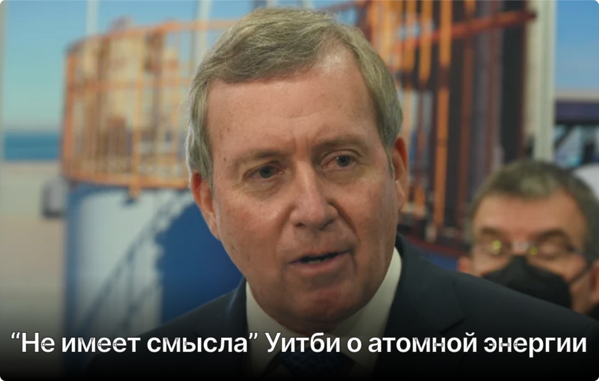

Министр Западной Австралии заявил, что атомная энергия "не имеет смысла" для штата
Под редакцией студента
В Западной Австралии разгорается ожесточенный спор об энергетическом будущем штата. Министр окружающей среды Рис Уитби, известный своим бескомпромиссным отношением к вопросам экологии, резко раскритиковал планы федерального правительства по изучению возможности внедрения ядерной энергетики. По его мнению, ядерная энергия — это тупиковый путь для Западной Австралии, и он намерен отстаивать свою позицию.
Министр Уитби не стеснялся в выражениях, называя предложения о строительстве атомных электростанций в штате "непрактичными" и "бессмысленными". В его понимании, ядерная энергетика не только не соответствует целям по переходу к "чистой" энергетике, но и является неоправданно дорогостоящей и опасной альтернативой
Уитби представил аргументацию против ядерной энергии:
- Экономическая нецелесообразность: По словам министра, строительство и эксплуатация ядерных станций потребуют огромных инвестиций. Он считает, что эти средства лучше направить на развитие возобновляемых источников энергии, которые уже сейчас являются более доступными и экономически выгодными.
- Долгий срок строительства: Уитби отметил, что строительство ядерных объектов — это долгий процесс, который может занять десятилетия. В то время как Западная Австралия уже располагает необходимыми технологиями для генерации энергии из солнца и ветра.
- Экологические проблемы: Министр подчеркнул проблемы, связанные с хранением и утилизацией радиоактивных отходов. Он также указал на риски аварий на ядерных объектах, которые могут привести к катастрофическим последствиям для окружающей среды и здоровья людей.
- Безопасность: Уитби выразил обеспокоенность по поводу безопасности ядерных объектов, указывая на потенциальные угрозы и риски.
Министр Уитби ясно дал понять, что Западная Австралия придерживается стратегии развития возобновляемой энергетики. Он подчеркнул, что штат располагает богатыми ресурсами солнечной и ветровой энергии, которые можно эффективно использовать для удовлетворения потребностей в энергии. По его словам, Западная Австралия готова стать мировым лидером в использовании "зеленой" энергии.
Заявление министра Уитби прозвучало в ответ на планы федерального правительства изучить возможности использования ядерной энергии в стране. Уитби выразил несогласие с этими планами, считая их противоречащими энергетическим целям Западной Австралии.
"Ядерная энергия для Западной Австралии просто не имеет смысла, — заявил министр Уитби. — Мы располагаем огромными запасами возобновляемой энергии, которые можем использовать уже сейчас. Вместо того чтобы вкладывать средства в устаревшие и опасные технологии, мы должны сосредоточиться на развитии "зеленых" альтернатив".
Критика ядерной энергетики со стороны министра Уитби — это не просто высказывание чиновника. Это отражение растущего общественного беспокойства по поводу ядерных технологий и приверженности многих регионов к устойчивым источникам энергии. Этот спор показывает, что будущее энергетики — это не просто техническая проблема, но и вопрос выбора между разными видениями будущего. И в этом споре Западная Австралия явно выступает за "зеленый" путь.
LiBuukus@gmail.com
+7(999)999-99-99